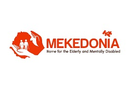
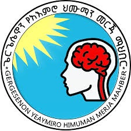
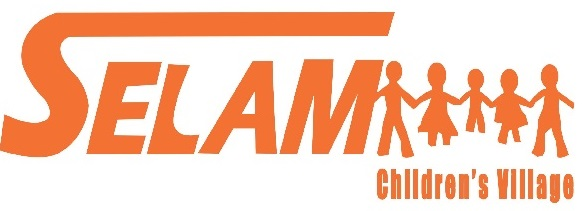
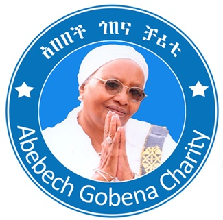

Mekedonia

Providing encouragement and rehabilitation to develop the physical and mental capacities of disabled individuals.To know more about Mekedonia clikc here
Mekedonia
our voluntary need is IT Technician,Nurse,Doctor if you want to lend hand clik here and fill the formvoluntary
Gergesenon

Gergesenon Mental Patients Aid Association is an association that was founded by a volunteer named Ato Hloso Ayele and received legal recognition in 2003
to help the mentally ill people who have no memory, no relatives, i.e. people who are completely unconscious, throw away their clothes and don’t even separate their food and soil.To know more about Gergesenon Gergesenon
our voluntary need is IT Technician,Nurse,Doctorour voluntary need is IT Technician,Nurse,Doctor if you want to lend hand clik here and fill the form voluntary
Zewditu Meshesha Children

Zewditu Meshesha Children and Family Charity’s development association is a local NGO which was established in 1984 EC
by Wro Zewditu Meshesha to support Orphan Children get an opportunity to education, health, shelter, nourishment and other community services.
To know more about Emama Zewditu Center EMAMA ZEWDITU CENTER
our voluntary need is IT Technician,Nurse,Doctor if you want to lend hand clik here and fill the form voluntary
Selam Child Village

SCV is committed to promote child care and positive youth development through provision of holistic services, and enabling community to care for the most vulnerable children and youth of Ethiopia.
If you want to know more about Selam Child Village selamchildrenvillage
our voluntary need is IT Technician,Nurse,Doctor if you want to lend hand clik here and fill the form
If you have the skill and want to volunteer click the link and fill the form voluntary
Abebech Gobena Charity

Abebech Gobena Charity - fulfills the needs of vulnerable and orphaned children to equip them with skills, knowledge and assertiveness in the society.
To know more about Abebech Gobena Charity click here the link Abebech Gobena Charity
Our volunteer work we need help with is carpentry,gardening,car technician.
If you have the skill and want to volunteer click the link and fill the form voluntary